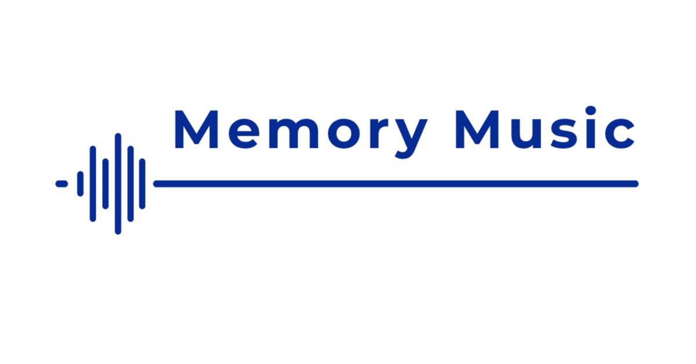

「あまりにも無防備だよね」と言われることがある。
そのときは「親しみやすいね」という意味で受け取っていたけれど、今振り返れば、どんな思いから出た言葉だったのかは定かではない。
初対面の人にもそういう印象を抱かれやすいことは、薄々勘づいていた。
｢しょうがないやつだ｣と思ってくれる人とはすぐに仲良くなれる。けれど、その無防備さを「人との境界線を引けないやつだ」と受け取られると、不意にかすり傷を負うことがある。思えば、そんな場面の多い人生だった。
2025年12月、Official髭男dismは、自分を守ることと誰かを愛することを歌った「Sanitizer」を配信した。
ドラマや映画などのタイアップ曲を数多く手がけてきた彼らにとって、ノンタイアップのシングルは「Stand By You」以来、約7年ぶりだった。
「Sanitizer」は、日本語で「消毒液」という意味。この曲における消毒液は、傷を誰かに癒してもらうためのものではない。自分の傷を自分で手当てするためのものだ。
耳に残るミドルテンポのロックバラード。
冒頭のピアノリフは軽やかなのに、どこかひりつく。音は澄んでいるのに、消毒液が傷口に触れたときのように、少し痛い。
静かに始まった演奏は、内側に沈んでいく「僕」の声に寄り添いながら、次第に厚みを増していく。弱音と自己嫌悪にとらわれていた「僕」が、自分を信じようと歩み出す。その歩調に合わせるように、バンドの音も前へ進んでいく。
この曲に登場する「君」は、救いの手を差し伸べる存在として描かれない。むしろ焦点が当たるのは、愛する人の前でさえ自分を粗末にしてしまう「僕」の危うさだ。
誰かに救われるのではなく、大切な人の隣に立つための足場を自分で取り戻していく。自分を立て直そうとする決意が、やがて相手へ向かう愛に変わっていくところに、この曲の静かな強さがある。
自分という人を自分で守る事が
君を愛すという事の第一歩
「君のため」と自分に言い聞かせて、思いを胸のうちに秘めるたび、言葉にしなかった感情。その沈黙こそが自分を傷つけているのだ。そう言わんばかりの歌詞が、胸に刺さる。
人知れず抱えた傷を癒す役目まで、大切な人に預けないでいたい。傷をなめ合うのではなく、それぞれが自分の傷を手当てしたうえで、同じ目線で笑っていたい。眠りながら微笑む君の、あまりにも無防備な寝顔を見るたび、そう思う。
https://www.youtube.com/watch?v=t-E9h7fJPX4